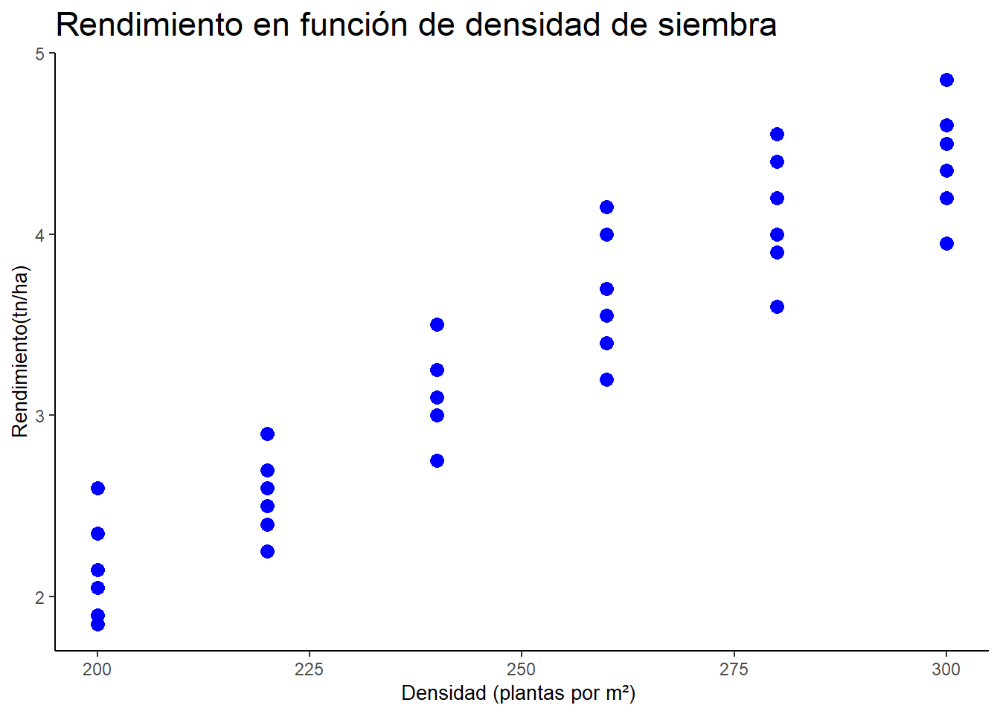

Un investigador desea estudiar si la densidad de siembra (medida en plantas por m²) tiene un efecto sobre el rendimiento del cultivo de trigo (medido en tn/ha). Para ello, fijó seis densidades de siembra distintas —200, 220, 240, 260, 280 y 300 plantas por m²— y destinó seis parcelas a cada densidad, obteniendo un total de 36 parcelas. La Tabla 1.1 presenta el rendimiento de trigo registrado en cada parcela, según su densidad de siembra.
1.1 Paso 1 Plantear la pregunta de investigación y las hipótesis
A partir de esta situación, la pregunta de investigación es:
¿Existe una relación entre la densidad de siembra y el rendimiento de trigo?
Esta pregunta se traduce en una hipótesis estadística sobre el parámetro que mide esa relación en el modelo: la pendiente \(\beta_1\) (que definiremos formalmente en el Paso 2).
1.2 Paso 2 — Explicitar el modelo estadístico
Antes de ajustar cualquier modelo, definimos sus componentes:
donde \(b_0\) y \(b_1\) son los parámetros poblacionales desconocidos que se estimarán a partir de los datos, y las hipótesis estadísticas que responden a la pregunta de investigación del Paso 1 son:
\[H_1: \beta_1 = 0 \quad \text{( No existe una relación lineal entre la densidad y el rendimiento)}\]\[H_1: \beta_1 \neq 0 \quad \text{(existe una relación lineal entre la densidad y el rendimiento)}\]
Sobre el diseño y el supuesto de independencia: dado que cada parcela recibió su densidad de siembra de forma controlada por el investigador y las parcelas fueron trabajadas de manera independiente entre sí (sin que el manejo de una influya sobre otra), es razonable asumir que se cumple el supuesto de independencia de las observaciones. Este es, precisamente, el tipo de decisión que —como señalamos en la sección 1.1— depende del diseño del estudio y debe evaluarse en este paso, no en la validación posterior.
1.3 Paso 3 Análsis exploratorio de los datos
Antes de ajustar en modelo, exploramos los datos para concer su distribución y vizualizar la realción entre las variables
library(ggplot2)g_densidad<-ggplot(trigo, aes(x = densidad, y = rinde)) +geom_point(color="blue", size=3) +labs(title ="Rendimiento en función de densidad de siembra", x ="Densidad (plantas por m²) ", y ="Rendimiento(tn/ha)")+theme_classic() +theme(axis.title.x =element_text(size =10),axis.title.y =element_text(size =10),title =element_text(size =14))g_densidad

Figura: Gráfico de dispersión Rendimiento vs densidad de siembra
El gráfico de dispersión muestra una tendencia clara: a medida que aumenta la densidad de siembra, el rendimiento tiende a aumentar también. La relación se observa aproximadamente lineal, sin curvaturas evidentes, lo cual es un primer indicio a favor de ajustar un modelo de regresión lineal simple.
También se observa que, para una misma densidad, existe cierta variabilidad en el rendimiento entre las seis parcelas —por ejemplo, en la densidad de 260 plantas/m² los valores van de aproximadamente 3.2 a 4.2 tn/ha—. Esta dispersión alrededor de la tendencia central es precisamente la que el modelo va a intentar capturar mediante el término de error aleatorio εᵢ.
¿Qué buscamos en este gráfico, en general? Al explorar la relación entre una variable respuesta y una variable explicativa numérica, conviene prestar atención a:
La forma de la relación: ¿es lineal, o se insinúa una curva? (si hay curvatura marcada, un modelo lineal no sería adecuado).
La dirección de la relación: ¿positiva (ambas variables aumentan juntas) o negativa?
La dispersión de los puntos alrededor de la tendencia: ¿es similar en todo el rango de X, o cambia (por ejemplo, se abre como un abanico)? Esto es un primer indicio visual de homocedasticidad, que se confirmará más formalmente en el Paso 5 con el análisis de residuos.
Valores atípicos: puntos que se alejan notoriamente del patrón general del resto de los datos.
En este ejemplo, el gráfico sugiere una relación lineal, positiva, sin atípicos evidentes ni cambios marcados en la dispersión — todo lo cual es coherente con los supuestos que vamos a validar formalmente más adelante.
1.4 Estimar los parámetros del modelo
Ajustamos el modelo de regresión lineal simple en R con la función lm():
Se obtienen las estimaciones de los parámetros, sus intervalos de confianza del 95 %, medidas de calidad de ajuste y, cuando corresponda, medidas de magnitud del efecto.
Code
modelo <-lm(rinde ~ densidad, data = trigo)
Code
summary(modelo)
Call:
lm(formula = rinde ~ densidad, data = trigo)
Residuals:
Min 1Q Median 3Q Max
-0.56270 -0.18472 -0.01651 0.16718 0.57968
Coefficients:
Estimate Std. Error t value Pr(>|t|)
(Intercept) -2.555159 0.360007 -7.098 3.36e-08 ***
densidad 0.023560 0.001427 16.512 < 2e-16 ***
---
Signif. codes: 0 '***' 0.001 '**' 0.01 '*' 0.05 '.' 0.1 ' ' 1
Residual standard error: 0.2924 on 34 degrees of freedom
Multiple R-squared: 0.8891, Adjusted R-squared: 0.8859
F-statistic: 272.7 on 1 and 34 DF, p-value: < 2.2e-16
La columna Estimate contiene las estimaciones b₀ y b₁, la ordenada al origen y la pendiente:
\(b_o = −2.555\) (ordenada al origen) \(b_1 = 0.0236\) (pendiente)
Con estos valores, la recta de regresión estimada es: \[\widehat{\text{rinde}} = -2.55 + 0.0235 \times \text{densidad}\]
Esta recta permite estimar el rendimiento medio esperado para cualquier valor de densidad de siembra dentro del rango estudiado (200 a 300 plantas/m²). Las demás columnas de la salida —Std. Error, t value y Pr(>|t|)— corresponden al error estándar y a la prueba de hipótesis de cada parámetro, que interpretaremos en el Paso 6.
1.5 Paso 5 — Validar el modelo ajustado
Antes de interpretar los resultados, es necesario evaluar si los supuestos del modelo son razonables. Los errores aleatorios εᵢ no son observables directamente; por eso utilizamos los residuos como su aproximación empírica: \[e_i = y_i - \hat{y}_i\]
Code
par(mfrow =c(2, 2))plot(modelo)
Figura: los cuatro gráficos diagnósticos — Residuals vs Fitted, Q-Q Residuals, Scale-Location, Residuals vs Leverage
Residuos vs. valores ajustados. Permite evaluar linealidad y homocedasticidad. Esperamos una nube de puntos distribuida aleatoriamente alrededor de cero, sin tendencias ni curvaturas. En este ejemplo, los residuos no muestran un patrón sistemático, lo que apoya el supuesto de linealidad.
Gráfico Q-Q de los residuos. Permite evaluar si los residuos se distribuyen aproximadamente Normal. Esperamos que los puntos se ubiquen cercanos a la recta de referencia. En este caso, la mayoría de los puntos se ajustan bien a la recta, con leves desvíos en los extremos (observaciones 22 y 27), que no resultan preocupantes.
Scale-Location. También permite evaluar homocedasticidad, observando si la dispersión de los residuos es aproximadamente constante a lo largo de los valores ajustados. No se observan cambios marcados en la dispersión.
Residuos vs. leverage. Permite identificar observaciones influyentes: aquellas cuya presencia o ausencia podría modificar de manera considerable los coeficientes estimados. Ninguna observación se destaca con una distancia de Cook preocupante.
Sobre la independencia. A diferencia de los otros tres supuestos, la independencia de las observaciones no se evalúa con estos gráficos: como señalamos en el Paso 2, depende del diseño del estudio. En este caso, dado que las parcelas fueron trabajadas de manera independiente, el supuesto se considera razonable.
En conjunto, el análisis de residuos no evidencia incumplimientos relevantes de los supuestos del modelo, por lo que podemos avanzar con confianza a la interpretación de los resultados.
1.6 Paso 6 — Interpretar y comunicar los resultados
1.6.1 Intervalo de confianza para la pendiente
Como planteamos en el Paso 2: H₀: β₁ = 0 vs. H₁: β₁ ≠ 0. Siguiendo la lógica presentada en la sección 1.2.3, el valor p asociado a la pendiente es menor a 0.001 (Pr(>|t|) < 2e-16). Se rechaza H₀ y se concluye que existe evidencia de una relación lineal positiva entre la densidad de siembra y el rendimiento de trigo.
Intervalo de confianza para la pendiente
El intervalo de confianza del 95 % para la pendiente permite estimar un rango de valores plausibles para el parámetro poblacional \(\beta_1\).
Con una confianza del 95 %, se estima que por cada aumento de una planta por m² en la densidad de siembra, el rendimiento medio aumenta entre 0.0206 y 0.0264 tn/ha. Como el intervalo no contiene al cero, este resultado es coherente con la prueba de hipótesis anterior.
Para estos datos, el intervalo de confianza es aproximadamente:
\[IC(\beta_1, 95\%)=(0.0206;\ 0.0264)\]
Observación:este intervalo puede obtenerse de la salida del modelo (summary(modelo)) o usando la función confint(modelo)
La prueba de hipótesis para la ordenada al origen suele tener menor interés práctico. En este ejemplo, una densidad de siembra igual a cero queda fuera del rango de valores estudiado; por ello, su interpretación no resulta relevante. Por lo tanto , tampoco se interpreta el intervalo de confianza para la ordenada al origen.
1.6.1.1 Interpretación de los coeficientes
La pendiente estimada es b₁ = 0.0235: en promedio, por cada aumento de una planta por m² en la densidad de siembra, el rendimiento esperado aumenta 0.0235 tn/ha.
Como las densidades evaluadas difieren en 20 plantas/m², resulta más intuitivo expresar el efecto reescalado a ese incremento (esto es una re-expresión del mismo parámetro, no un valor nuevo a estimar): \[20 \times 0.0235 = 0.47 \text{ tn/ha}\]
Es decir, por cada aumento de 20 plantas/m², se espera que el rendimiento medio aumente aproximadamente \(0.47 \text { tn/ha}\).
La ordenada al origen estimada es \(b_o = −2.555\) (ordenada al origen), y representa el rendimiento esperado cuando la densidad es igual a cero. Esta interpretación no tiene sentido práctico, ya que una densidad de cero plantas/m² se encuentra fuera del rango estudiado; por eso tampoco se interpreta su intervalo de confianza.
Variabilidad no explicada por el modelo
El error estándar residual es \(0.2924\), lo que indica que, en promedio, los rendimientos observados se alejan de la recta estimada alrededor de \(0.29 \text { tn/ha}\).
1.6.1.2 Coeficiente de determinación
\[R^2=0.889\]
Esto indica que el \(88.9 \text{ \%}\) de la variabilidad observada en el rendimiento se explica mediante el modelo lineal que utiliza la densidad de siembra como variable explicativa. El porcentaje restante corresponde a otros factores no incluidos en el modelo y a la variabilidad aleatoria.
1.6.1.3 Prueba global del modelo
El estadístico F (\(272.7\), \(p < 2.2e-16\)) evalúa si el modelo en conjunto explica una parte significativa de la variabilidad de la respuesta. En una regresión lineal simple, esta prueba conduce a la misma conclusión que la prueba de hipótesis para la pendiente.
1.6.1.4 Comunicación de los resultados
Se ajustó un modelo de regresión lineal simple para evaluar la asociación entre la densidad de siembra y el rendimiento de trigo. El análisis de residuos no evidenció incumplimientos relevantes de los supuestos de linealidad, normalidad, homocedasticidad e independencia. Se observó una asociación lineal positiva y estadísticamente significativa entre ambas variables ($b_1 = 0.0235 $; \(IC 95 \% = [0.0206; 0.0264]; p < 0.001\)). El modelo explicó el \(88.9 \text{ \%}\) de la variabilidad del rendimiento (\(R^2=0.889\)).
2
El valor p asociado a la pendiente es menor que 0.001. Por lo tanto, se rechaza la hipótesis nula y se concluye que existe evidencia de una relación lineal positiva entre la densidad de siembra y el rendimiento de trigo.
####Intervalo de confianza para la pendiente
Para estos datos, el intervalo de confianza es aproximadamente:
\[IC(\beta_1, 95\%)=(0.0206;\ 0.0264)\]
Con una confianza del 95 %, se estima que por cada aumento de una unidad en la densidad de siembra, el rendimiento medio aumenta entre \(0.0206\) y \(0.0264 \ tn/ha\).
Como el intervalo no contiene al cero, este resultado coincide con la prueba de hipótesis anterior.
###Variabilidad no explicada por el modelo
El error estándar residual indica la variabilidad de los rendimientos alrededor de la recta estimada. En este ejemplo, su valor es aproximadamente \(0.29\ tn/ha\).
Esto significa que, en promedio, los rendimientos observados se alejan de la recta estimada alrededor de \(0.29\ tn/ha\)..
###Coeficiente de determinación
El coeficiente de determinación obtenido es:\(R^2=0.889\)
Esto indica que el \(88.9 \%\) de la variabilidad observada en el rendimiento se explica mediante el modelo lineal que utiliza la densidad de siembra como variable explicativa.
El porcentaje restante se debe a otros factores no incorporados en el modelo y a la variabilidad aleatoria.
####Prueba global del modelo
Al final de la salida de summary(modelo) también aparece un estadístico F y su valor p. Esta prueba evalúa si el modelo, en conjunto, explica una parte significativa de la variabilidad de la respuesta.
En una regresión lineal simple, esta prueba conduce a la misma conclusión que la prueba de hipótesis para la pendiente.
2.1 Comunicar los resultados
Se ajustó un modelo de regresión lineal simple para evaluar la asociación entre la densidad de siembra y el rendimiento de trigo. El análisis de los residuos no evidenció incumplimientos relevantes de los supuestos de linealidad, normalidad, homocedasticidad e independencia. Se observó una asociación lineal positiva y estadísticamente significativa entre ambas variables (\(\beta=0.0235\ tn/ha \ por\ planta/m^2\)²; \(IC95%: 0.0206–0.0264; p<0.001)\). El modelo explicó el \(88.9 \ %\) de la variabilidad del rendimiento (\(R^2=0.889\)).
Source Code
---title: "Práctica guiada"---# Regresión lineal simpleUn investigador desea estudiar si la **densidad de siembra** (medida en plantas por m²) tiene un efecto sobre el **rendimiento del cultivo de trigo** (medido en tn/ha). Para ello, fijó seis densidades de siembra distintas —200, 220, 240, 260, 280 y 300 plantas por m²— y destinó seis parcelas a cada densidad, obteniendo un total de 36 parcelas. La Tabla 1.1 presenta el rendimiento de trigo registrado en cada parcela, según su densidad de siembra.## Paso 1 **Plantear la pregunta de investigación y las hipótesis**A partir de esta situación, la pregunta de investigación es:¿Existe una relación entre la densidad de siembra y el rendimiento de trigo?Esta pregunta se traduce en una hipótesis estadística sobre el parámetro que mide esa relación en el modelo: la pendiente $\beta_1$ (que definiremos formalmente en el Paso 2).## Paso 2 — Explicitar el modelo estadísticoAntes de ajustar cualquier modelo, definimos sus componentes:| Componente del MLG | En regresión lineal simple ||----------------------|---------------------------------|| Variable respuesta | $Y_i$: rendimiento de trigo || Parte sistemática | $\beta_0 + \beta_1x_i$) || Variable explicativa | $x_i$: densidad de siembra || Error aleatorio | $\varepsilon_i\sim N(0, \sigma^2)$ ||||El modelo estadístico queda formalmente expresado como: $$Y_i = \beta_0 + \beta_1 x_i + \varepsilon_i$$donde $b_0$ y $b_1$ son los parámetros poblacionales desconocidos que se estimarán a partir de los datos, y las hipótesis estadísticas que responden a la pregunta de investigación del Paso 1 son:$$H_1: \beta_1 = 0 \quad \text{( No existe una relación lineal entre la densidad y el rendimiento)}$$ $$H_1: \beta_1 \neq 0 \quad \text{(existe una relación lineal entre la densidad y el rendimiento)}$$Sobre el diseño y el supuesto de independencia: dado que cada parcela recibió su densidad de siembra de forma controlada por el investigador y las parcelas fueron trabajadas de manera independiente entre sí (sin que el manejo de una influya sobre otra), es razonable asumir que se cumple el supuesto de independencia de las observaciones. Este es, precisamente, el tipo de decisión que —como señalamos en la sección 1.1— depende del diseño del estudio y debe evaluarse en este paso, no en la validación posterior.## Paso 3 Análsis exploratorio de los datosAntes de ajustar en modelo, exploramos los datos para concer su distribución y vizualizar la realción entre las variablesCargamos los datos```{r}# Base de datos: densidad de siembra y rendimientodensidad <-rep(c(200, 220, 240, 260, 280, 300), each =6)rinde <-c(# Densidad 2002.6, 1.9, 1.85, 2.05, 2.15, 2.35,# Densidad 2202.7, 2.6, 2.25, 2.5, 2.9, 2.4,# Densidad 2403, 3.1, 3.25, 2.75, 3.5, 3.1,# Densidad 2604, 3.7, 3.2, 4.15, 3.55, 3.4,# Densidad 2803.6, 3.9, 4.55, 4.2, 4.4, 4,# Densidad 3004.5, 4.6, 4.85, 4.2, 4.35, 3.95)trigo <-data.frame(densidad, rinde)```Graficamos la inforamción```{r}library(ggplot2)g_densidad<-ggplot(trigo, aes(x = densidad, y = rinde)) +geom_point(color="blue", size=3) +labs(title ="Rendimiento en función de densidad de siembra", x ="Densidad (plantas por m²) ", y ="Rendimiento(tn/ha)")+theme_classic() +theme(axis.title.x =element_text(size =10),axis.title.y =element_text(size =10),title =element_text(size =14))g_densidad```Figura: Gráfico de dispersión Rendimiento vs densidad de siembraEl gráfico de dispersión muestra una tendencia clara: a medida que aumenta la densidad de siembra, el rendimiento tiende a aumentar también. La relación se observa aproximadamente **lineal**, sin curvaturas evidentes, lo cual es un primer indicio a favor de ajustar un modelo de regresión lineal simple.También se observa que, para una misma densidad, existe cierta variabilidad en el rendimiento entre las seis parcelas —por ejemplo, en la densidad de 260 plantas/m² los valores van de aproximadamente 3.2 a 4.2 tn/ha—. Esta dispersión alrededor de la tendencia central es precisamente la que el modelo va a intentar capturar mediante el término de error aleatorio εᵢ.**¿Qué buscamos en este gráfico, en general?** Al explorar la relación entre una variable respuesta y una variable explicativa numérica, conviene prestar atención a:**La forma de la relación**: ¿es lineal, o se insinúa una curva? (si hay curvatura marcada, un modelo lineal no sería adecuado).**La dirección de la relación**: ¿positiva (ambas variables aumentan juntas) o negativa?**La dispersión de los puntos alrededor de la tendencia**: ¿es similar en todo el rango de X, o cambia (por ejemplo, se abre como un abanico)? Esto es un primer indicio visual de homocedasticidad, que se confirmará más formalmente en el Paso 5 con el análisis de residuos.**Valores atípicos**: puntos que se alejan notoriamente del patrón general del resto de los datos.En este ejemplo, el gráfico sugiere una relación lineal, positiva, sin atípicos evidentes ni cambios marcados en la dispersión — todo lo cual es coherente con los supuestos que vamos a validar formalmente más adelante.## Estimar los parámetros del modeloAjustamos el modelo de regresión lineal simple en R con la función `lm()`:Se obtienen las estimaciones de los parámetros, sus intervalos de confianza del 95 %, medidas de calidad de ajuste y, cuando corresponda, medidas de magnitud del efecto.```{r}modelo <-lm(rinde ~ densidad, data = trigo)``````{r}summary(modelo)```La columna Estimate contiene las estimaciones b₀ y b₁, la ordenada al origen y la pendiente:$b_o = −2.555$ (ordenada al origen) $b_1 = 0.0236$ (pendiente)Con estos valores, la recta de regresión estimada es: $$\widehat{\text{rinde}} = -2.55 + 0.0235 \times \text{densidad}$$Esta recta permite estimar el rendimiento medio esperado para cualquier valor de densidad de siembra dentro del rango estudiado (200 a 300 plantas/m²). Las demás columnas de la salida `—Std. Error`, `t value` y `Pr(>|t|)`— corresponden al error estándar y a la prueba de hipótesis de cada parámetro, que interpretaremos en el Paso 6.## Paso 5 — Validar el modelo ajustadoAntes de interpretar los resultados, es necesario evaluar si los supuestos del modelo son razonables. Los errores aleatorios εᵢ no son observables directamente; por eso utilizamos los residuos como su aproximación empírica: $$e_i = y_i - \hat{y}_i$$```{r}par(mfrow =c(2, 2))plot(modelo)```Figura: los cuatro gráficos diagnósticos — Residuals vs Fitted, Q-Q Residuals, Scale-Location, Residuals vs Leverage**Residuos vs. valores ajustados.** Permite evaluar linealidad y homocedasticidad. Esperamos una nube de puntos distribuida aleatoriamente alrededor de cero, sin tendencias ni curvaturas. En este ejemplo, los residuos no muestran un patrón sistemático, lo que apoya el supuesto de linealidad.**Gráfico Q-Q de los residuos.** Permite evaluar si los residuos se distribuyen aproximadamente Normal. Esperamos que los puntos se ubiquen cercanos a la recta de referencia. En este caso, la mayoría de los puntos se ajustan bien a la recta, con leves desvíos en los extremos (observaciones 22 y 27), que no resultan preocupantes.**Scale-Location.** También permite evaluar homocedasticidad, observando si la dispersión de los residuos es aproximadamente constante a lo largo de los valores ajustados. No se observan cambios marcados en la dispersión.**Residuos vs. leverage.** Permite identificar observaciones influyentes: aquellas cuya presencia o ausencia podría modificar de manera considerable los coeficientes estimados. Ninguna observación se destaca con una distancia de Cook preocupante.**Sobre la independencia.** A diferencia de los otros tres supuestos, la independencia de las observaciones no se evalúa con estos gráficos: como señalamos en el Paso 2, depende del diseño del estudio. En este caso, dado que las parcelas fueron trabajadas de manera independiente, el supuesto se considera razonable.En conjunto, el análisis de residuos no evidencia incumplimientos relevantes de los supuestos del modelo, por lo que podemos avanzar con confianza a la interpretación de los resultados.## Paso 6 — Interpretar y comunicar los resultados### Intervalo de confianza para la pendienteComo planteamos en el Paso 2: H₀: β₁ = 0 vs. H₁: β₁ ≠ 0. Siguiendo la lógica presentada en la sección 1.2.3, el valor *p* asociado a la pendiente es menor a 0.001 (`Pr(>|t|) < 2e-16`). Se rechaza H₀ y se concluye que existe evidencia de una relación lineal positiva entre la densidad de siembra y el rendimiento de trigo.**Intervalo de confianza para la pendiente**El intervalo de confianza del 95 % para la pendiente permite estimar un rango de valores plausibles para el parámetro poblacional $\beta_1$.```{r}confint(modelo)```Con una confianza del 95 %, se estima que por cada aumento de una planta por m² en la densidad de siembra, el rendimiento medio aumenta entre 0.0206 y 0.0264 tn/ha. Como el intervalo no contiene al cero, este resultado es coherente con la prueba de hipótesis anterior.Para estos datos, el intervalo de confianza es aproximadamente:$$IC(\beta_1, 95\%)=(0.0206;\ 0.0264)$$*Observación*:este intervalo puede obtenerse de la salida del modelo (`summary(modelo)`) o usando la función `confint(modelo)`La prueba de hipótesis para la ordenada al origen suele tener menor interés práctico. En este ejemplo, una densidad de siembra igual a cero queda fuera del rango de valores estudiado; por ello, su interpretación no resulta relevante. Por lo tanto , tampoco se interpreta el intervalo de confianza para la ordenada al origen.#### Interpretación de los coeficientesLa pendiente estimada es b₁ = 0.0235: en promedio, por cada aumento de una planta por m² en la densidad de siembra, el rendimiento esperado aumenta 0.0235 tn/ha.Como las densidades evaluadas difieren en 20 plantas/m², resulta más intuitivo expresar el efecto reescalado a ese incremento (esto es una re-expresión del mismo parámetro, no un valor nuevo a estimar): $$20 \times 0.0235 = 0.47 \text{ tn/ha}$$Es decir, por cada aumento de 20 plantas/m², se espera que el rendimiento medio aumente aproximadamente $0.47 \text { tn/ha}$.La ordenada al origen estimada es $b_o = −2.555$ (ordenada al origen), y representa el rendimiento esperado cuando la densidad es igual a cero. Esta interpretación no tiene sentido práctico, ya que una densidad de cero plantas/m² se encuentra fuera del rango estudiado; por eso tampoco se interpreta su intervalo de confianza.Variabilidad no explicada por el modeloEl error estándar residual es $0.2924$, lo que indica que, en promedio, los rendimientos observados se alejan de la recta estimada alrededor de $0.29 \text { tn/ha}$.#### Coeficiente de determinación$$R^2=0.889$$Esto indica que el $88.9 \text{ \%}$ de la variabilidad observada en el rendimiento se explica mediante el modelo lineal que utiliza la densidad de siembra como variable explicativa. El porcentaje restante corresponde a otros factores no incluidos en el modelo y a la variabilidad aleatoria.#### Prueba global del modeloEl estadístico F ($272.7$, $p < 2.2e-16$) evalúa si el modelo en conjunto explica una parte significativa de la variabilidad de la respuesta. En una regresión lineal simple, esta prueba conduce a la misma conclusión que la prueba de hipótesis para la pendiente.#### Comunicación de los resultadosSe ajustó un modelo de regresión lineal simple para evaluar la asociación entre la densidad de siembra y el rendimiento de trigo. El análisis de residuos no evidenció incumplimientos relevantes de los supuestos de linealidad, normalidad, homocedasticidad e independencia. Se observó una asociación lineal positiva y estadísticamente significativa entre ambas variables (\$b_1 = 0.0235 \text{ tn/ha por planta/m²} \$; $IC 95 \% = [0.0206; 0.0264]; p < 0.001$). El modelo explicó el $88.9 \text{ \%}$ de la variabilidad del rendimiento ($R^2=0.889$).# El valor p asociado a la pendiente es menor que 0.001. Por lo tanto, se rechaza la hipótesis nula y se concluye que existe evidencia de una relación lineal positiva entre la densidad de siembra y el rendimiento de trigo.####Intervalo de confianza para la pendientePara estos datos, el intervalo de confianza es aproximadamente:$$IC(\beta_1, 95\%)=(0.0206;\ 0.0264)$$Con una confianza del 95 %, se estima que por cada aumento de una unidad en la densidad de siembra, el rendimiento medio aumenta entre $0.0206$ y $0.0264 \ tn/ha$.Como el intervalo no contiene al cero, este resultado coincide con la prueba de hipótesis anterior.###Variabilidad no explicada por el modeloEl error estándar residual indica la variabilidad de los rendimientos alrededor de la recta estimada. En este ejemplo, su valor es aproximadamente $0.29\ tn/ha$.Esto significa que, en promedio, los rendimientos observados se alejan de la recta estimada alrededor de $0.29\ tn/ha$..###Coeficiente de determinaciónEl coeficiente de determinación obtenido es:$R^2=0.889$Esto indica que el $88.9 \%$ de la variabilidad observada en el rendimiento se explica mediante el modelo lineal que utiliza la densidad de siembra como variable explicativa.El porcentaje restante se debe a otros factores no incorporados en el modelo y a la variabilidad aleatoria.####Prueba global del modeloAl final de la salida de summary(modelo) también aparece un estadístico F y su valor p. Esta prueba evalúa si el modelo, en conjunto, explica una parte significativa de la variabilidad de la respuesta.En una regresión lineal simple, esta prueba conduce a la misma conclusión que la prueba de hipótesis para la pendiente.## Comunicar los resultadosSe ajustó un modelo de regresión lineal simple para evaluar la asociación entre la densidad de siembra y el rendimiento de trigo. El análisis de los residuos no evidenció incumplimientos relevantes de los supuestos de linealidad, normalidad, homocedasticidad e independencia. Se observó una asociación lineal positiva y estadísticamente significativa entre ambas variables ($\beta=0.0235\ tn/ha \ por\ planta/m^2$²; $IC95%: 0.0206–0.0264; p<0.001)$. El modelo explicó el $88.9 \ %$ de la variabilidad del rendimiento ($R^2=0.889$).